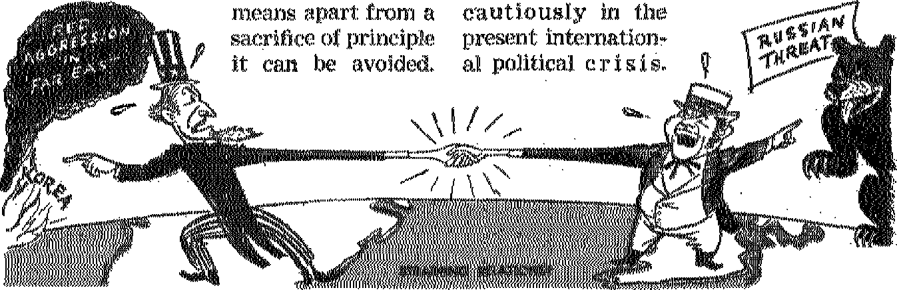
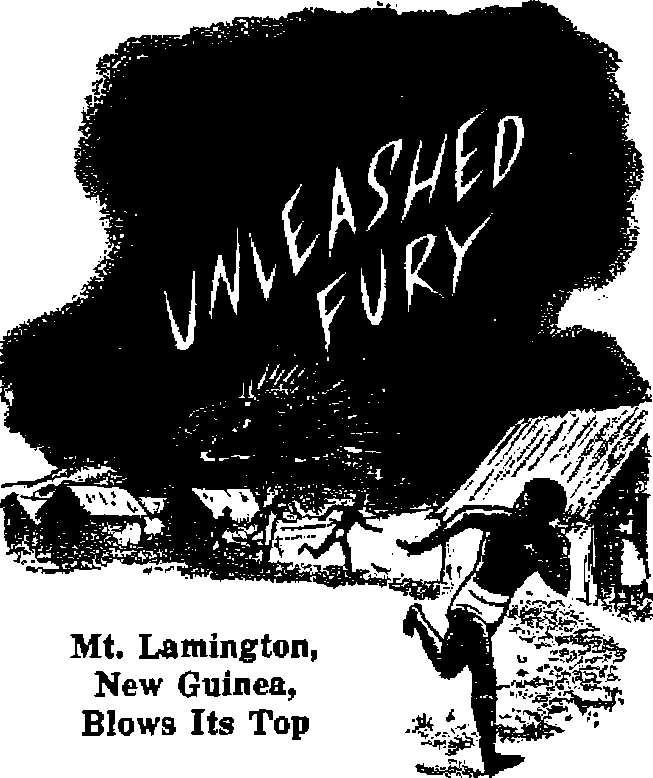

Funeral costs often necessitate mourners for the mourners
The people <?( Europe were here is what they said
British View of Anglo-American Relations T^c sides to every s torv—■the Bro oh frankly1 toll theirs
Funeral oasts necessitate moron te the mourners
THE MISSION OF THIS JOURNAL
New* sources that are able to keep you awake io the vital Esaus* of our time* mart be unfettered by censorship and sel&h Interest*. ‘Awake!” ha* no fetters. It recognizes facts, face* facts, is free to publish facts. It hl net bound by political ambitions or obligations; it 1* unhampered by advertisers whose toes must net be trodden on; it is unprejudiced by traditional creed#. This Journal keep# itself fret that it may speak freely io you. But it does not abuse its freedom* It maintains integrity io truth.
“Awake use* the regular news channel*, but is not dependent on them. Its own correspondents are on all continents, In scores of nations. From the four corners of the earth their uncensored* on-the' scenes reports come to you through these columns. This journal’* viewpoint Is not narrow, but is international. It is read In many nation#, in many languages, by persons of all ages. Through its pages many fields of knowledge pass in review—government, commerce, religion, history, geography, science, social conditions, natural wonders—why, its cover* age is as broad as the earth and a* high as the heavens.
"Awake?* pledge* itself to righteous principles, to exposing hidden foes and subtle dangers, to championing freedom for .all. to comforting mourners and strengthening those disheartened by the failures of a delinquent world, reflecting sure hope for the establishment of a righf. eous New World.
Get acquainted with “Awake!” Keep awake by reading ‘‘Awake?*
PCBllHHEP SEMI JiOWTHLT Hf WATCHTOWtn DIB UK AKD THaCT SOCIETY. INC.
117 Adaanr Hcrwt Brooklyn 1, N. Y.. L’. S. A.
.V, if. KmOrjt, P'tvfi^eiri J.'iu* r Sitter
Prirttiris this iasuai 870flDC Flva cant* ■ copy
U«F«a>« h waiih the aua>tl>a H pvhlUMa:
EsflUft. r.iuiMi.
Njrwtfltn. ftpwi'ih Mwitlr -Die. 1st!. I'rmcti, Qrutk. Fwrjrjesr, ^wrtixh. ( krtltilu
Twrlj «<4crlFtl«i lit#
AMtflM, U.S, JIT VHttek i MX *1
AattrUla, 11 Smrfort M . S'jithfliM. N fl W. Jtf CiMftdx, 40 Indu Arr. ?6r«a»x 5. OiUrtr il Eh^im, CW^rti r<ir*x LwjA*>, VS Ji |«wtt MrUa, 4113 Butt* Mum, C*je Te*n H
MialKptM uticiia > *ent in four wm ttj in mth t« puir*n’j*
fiifc 4*'.'iT'rry of liWjXfJ itt
Jn-fl ffitcrf-ta k[UMT n* aVv i, Ox?:/ T fcif.Ttriorti] -xflflf wJ*.- only Sutsdruvn ratn In dUttirnt ce^triM fi't lift* io Mntm V WFlrtfttt i.rrH«i’ Udit m. k*K tv j inuM be^r* juh*erip<tca <: n'tfi Ctiinft V Mdrm wh*n tr rur b* flirted tffer<i*c wrMn r.t iieod your «M u ¥*u w JHW
Enw< m ■Htnri>rl« Mazier *t M. T.
Art or Mircft 3. JSTI?. K's'jd In V. » A
CONTENTS
Brit’ah View of Anglo-American Relations 5
Rearming, Belgium Hopes fcr Peace 10
Norway’s Fate Tied to the West
Outwitting the “Disease Demons"
"Your Word Is Truth"
The Twilight of MoraJs
You Cannot Scare People into
l,Let Us Eat and Drink, for Tomorrow—,r
“Now it is high time to awake’—Romans 13:11 &
Volume XXX1I Brooklyn, N. ¥., June 22, 1951 Number 1g
POPULAR custom allows the right of change to fashions, the weather and women's minds. But this is an unstable world. Principles that last, moral values that all respect, and rulers that everyone recognizes are unknown. The most solemn oaths are subject to change without notice. Men may laugh at changing fashion; but the design with which he garbs his principles alters at every election or assassination or political coup. They may scorn the changeable weather, but storms cloud up man’s political promises of sunshine with far less provocation. And strong man scoffs at woman’s “prerogative” to change her mind; but the history of the past few years records changes by political strong men to shame any woman who ever lived.
Consider the international checkerboard of the past decade. Ten . years ago, Germany, Italy and Japan swung on a three-way axis bristling with totalitarian armed might and ambitions of world rule. Russia, recoiling from Germany’s sudden stab-in-the-back invasion of 1941, rose to become the great Eastern ally of the democratic West. China, by natural philosophy and her long-standing enmity with Japan, stood in the Allied camp. Franco Spain coyly lingered about the Axis pantry while her generalissimo exchanged love letters with Hitler and Mussolini. Though the Allies, even in their darkest hour, did not apparently seem far enough gone for Franco to jump into the shooting war against them, he did coo consolingly to Hitler when the fuehrer appeared to be firmly entrenched in Europe and in history: “I stand at your side . . . and decidedly at your disposal, united in common historical destiny.”
Thus were the sets deployed on the world stage in 1M1. Since that time many actors have entered and exited and much change in scenery has taken place. The Axis lies a broken hulk, her armies dissolved, her industry dead. The riddled Russian forces of Stalingrad have surged over the comeback trail, first made possible by American assistance during the war years. Now these loom a terrifying military monster, motivated by the Marx-Lenin philosophy of world conquest. Outside their own sprawling borders squats a ring of satellite powers, among which is warlike Red China, successor to the Nationalist regime of pro-West days. Recent developments in Indo-China and Korea indicate that China has replaced Japan as the tyrant of the Far East. In. Europe the satellites snort and stamp at Russian dictation, just as now they form a threatening belt around Tito’s Yugoslavia, last holdout against the Kremlin on the central and eastern European continent.
In what has all of this resulted? The North Atlantic Treaty Organization came into being to cement the common defense of the United States and Western Europe should the Reds try to march to the Atlantic* However, defense of ths Western continent has called for the assistance of Western Germany.
At the mere suggestion of this, an appalled Russia growled and threatened. Rearming Germany must proceed in face of constant danger that at any time the Reds will consider the development inimical to their welfare and move to the attack. If this does not happen, other considerations must be made. Should a formidable German army become a reality, a full-scale arms race between Western Europe and Russia might reach maddening proportions and prove the economic downfall of Europe. Also, there is always the possibility in this topsy-turvy world that a rebom German military machine might turn, Frankenstein-like, on her creators and set forth on her own campaign of conquest for the third time in a generation. It is not even inconceivable that she would align herself with Russia in a deal for divided world domination.
Of course, some may question the moral advantage in rearming the Germans. True, the United States, Great Britain, France and Russia swore by the Potsdam pact in July 1945 to keep Germany disarmed in the interests of world peace. However, Russia violated the pact almost immediately in isolating her own zone of influence from the rest of Germany, by trying to drive the Western powers out of Berlin, and in forming an army of 50,000 East Germans.
Another great switch has already been made by the West in Europe. In the summer of 1950, the U. S. Congress approved a $62,500,u00 Joan to Franco Spain, and recently reopened diplomatic relations with that land by sending the first American ambassador since the 1946 condemnation of the Franco regime by the-U.N.
Those seeking.a moral excuse for this ac* tion can find it, too, in the U.N.’s repeal of its condemnation, a repeal made possible largely through American influence.
In the Far East, -to halt Stalin’s “man Friday”, Mao of Red China, similar rearming of Japan is contemplated. To this possibility, too, Russia has stormed forth with protests, and China is none too happy. Here as in the European case there is also at least the remote possibility that a rearmed Japan would be a dangerous Japan.
So there are changes other than with fashion, the weather and women. This world is a changing world. If it becomes regarded as a world without conamon trust there can be little wonder. If nations make sworn compacts realizing that selfish interests may quickly end their force, if the expediency of the moment is to outweigh all moral value, then the world seems due for constant change, unrest and violence. Thus it is that world peace, for want of lasting trust and a ruler all can respect and principles that will be upheld without change, remains an illusion.
Rejoice, though, that a great commander has been installed upon a heavenly throne who will command and receive the lasting respect and obedience of all who live. This commander is Christ Jesus, of whom one of his apostles once said: “Jesus Christ is the same yesterday and today, and forever.” (Hebrews 13:8, NW) No leagues does he enter with worldly rulers only to toy a while with them, then stab former allies in the back. Firmly, his code of principles, the Bible, states that he shall rule the (present) nations with a rod of iron, dashing them like a potter’s vessel. He stands unequivocally for the kingdom of his Father, Jehovah God. All peace seekers victimized by the tom and twisted design of present global politics can now with good cause welcome in that kingdom, pray for it, live for it.
By "Awtikd” 8ft In
T'N BRITAIN there is a. good, deal of adA verse criticism of the United States of America. Great care, however, is taken by responsible, newspapers to acknowledge in appreciative terms the help 'that has been nxeived in the form of Marshall Plan aid, for this has been the prime factor in assisting tl'us country to again stand upon her feet economically. Nor is 'the nation unmindful of America's contribution 'toward the cause of defending Western Europe against Communist aggression. But run* ning across this grain of gratitude are certain fissures which at times widen into
I I ■
regrettable gaps in Anglo-American relations. From the British point of view, the recent fissures have been caused by the U. S. A. attitude m China, and some phases in the conduct qf the Korean, war.
Xt should be pointed out that the general altitude of the British peopxe h not. so much. anti-American, in the sen.se of antag-onhm or antipathy, as it is the reaction of a fr^donidoving' people who have borne the brunt of Uto worid ware and who are
Most disturbing to Britain in. recent months was 'the decision of the United States Congress to secure United Nations* action against Communist China's aggres« sion. in Korea,, which action, at first was to have included sanctions against China, with the possible bombing of Manehuitan bases.. It ■ is believed in Britain. that eco noxnic sanctions and a coastal blockade of China would aggravate the Chinese and possibly lead to an extension of 'the conflict, and, if it becaine a general war, then Soviet Russia would no longer' he contained. .In that unfortunate event Mtata sees herself as an- island aerodrome—-ah ready it: is accommodating mcreajsiing numbers of American and British war plarm —under heavy and continuous bombard* •went, which, undoubtedly would be the primary objective of Russia's air force*
■ Furthermore, China h a nation with which Britain has had mo^: friendly rda-lions, The Briton likes the Chinaman, and 'trade with. China is adtao an important consideration. When all. these things: are taken into consideration perhaps it may be ap*.
not keen on the idea of being dragged into
predated a little more in the United States
a third, if by any why Britain moves-
Another less direct factor that weighs with people in Britain is the conviction that Chiang Kai-shek should be disowned. On the other hand, the American official view is believed by many in Britain to be that Formosa is regarded as -an American diplomatic outpost and thatChiang’s army might be a useful deterrent or bargaining factor.
As Others See You
A leading British newspaper, the News Chronicle, sums up the diversity of views between the two great democracies of the West in an article entitled “On Guard”, from which the following extract is taken.
“When the average British citizen reads the latest reports of the American reaction to China’s turndown of the U. N. peace proposals he experiences a chill of apprehension.
“This, he thinks, is precisely what we all fear. Here are these impetuous Americans charging into the breach, breathing fire and slaughter, with only the haziest idea of the consequences. They want to brand China as an aggressor and to deny her a seat in the United Nations. They want to hang onto Formosa, and still talk of Chiang Kai-shek’s Nationalist government as if it were the rightful ruler of the Chinese masses. They want to drag us into a war with China which would involve a dangerous military adventure on the other side of the earth when our real and pressing need is to defend Western Europe.
“On the other side of the Atlantic the average American is in the same kind of frustrated, bewildered mood. But he looks at the problem from an entirely different point of view. He is reading about the British reaction to the same news. And his thoughts run something like this;
"This is exactly what we feared. Here are these timid, dithering British still trying to call black white, still trying to appease the unappeasable. They can not, or will not, see that this is a clear case of aggression by Red China, that the Communists in Korea will be satisfied with nothing less than the complete destruction of the U. N. armies—which are 90 per cent American anyway. They will not realize that unless we take a firm stand now aggression will once again pay dividends. Western democratic prestige in the Far East will collapse. The Communists will move into Malaya, Indo-China, Burma, and even India. Are the British blind?
“These are the majority points of view in the twp great democratic nations. Each is reflected in the policy and actions of its respective government. The chance of an open break in the Anglo-American alliance is real and immediate. The Russians are straining every nerve to bring it about.
“It would be the greatest diplomatic victory they could possibly gain—-comparable in significance only to Von Ribbentrop’s pact with Molotov when he secured Russian neutrality just before the second world war.”
Other Causes for British Wrath
At other points the relationship of the great democracies are also severely strained. Take, for example, the selection of top-ranking officers for the newly created North Atlantic alliance. Whereas there was great jubilation on both sides of the Atlantic over the appointment of General Eisenhower .as supreme commander, there was equal indignation here in Britain over the announcement that another American, Admiral Fechteler, had been selected to head the Allied naval forces. In a storm of protest, Mr. Churchill expressed the personal feelings of many in this proud seafaring nation when he bitterly asked Prime Minister Attlee: “Was there no British admiral capable of discharging these functions? Does not Great Britain lie at the very key to all communications across the
Atlantic with Europe, and are not the sea approaches to our island, in the event of a submarine attack, vital to our life? How is it that when our experience is longer and wider than that of any other country of the submarine evil [Britain sank 535 German U-boats compared with 174 by the United States], and when we have agreed with so much pleasure that General Eisenhower should be in command of the armed forces on land, we should resign any claim we might be thought to have of command of the sea on the Atlantic?”
Only when soothing balm came a fortnight later did this deep wound begin to heal. That analgesic announcement declared that Field Marshal Viscount Montgomery had been appointed as second in command under Eisenhower, while Chief Marshal Sir Hugh Saunders was named to head the international Air Force and Admiral Sir Patrick Brind was made chief of staff of the northern European fleet
When on the basis of a broad analysis an assessment is made of the feeling of the British people toward their American friends, one cannot say that they are antiAmerican so much as reacting like members of a family circle. It is as if one member of a family was proposing or undertaking something which another member did not agree with and which the latter thought would seriously affect the future well-being of all. This feeling here is not confined to one class, nor are the general feelings of the politicians different from those of the people. In reflecting these feelings the public press is reasonably discreet, and while pressing the British point of view, it is not inclined to disturb the over-all amicable relations.
Indeed, the press seems very much concerned lest the close friendship of the English-speaking world be seriously impaired. “It must be realized that any and every difference of opinion between Britain and America is bound to be exploited by the enemies of us both,” declared the London Evening News (Jan. 24, 1951), hence, a great deal is at stake: "the integrity and strength of UNO, Anglo-American friendship, and that unity of purpose between the British Commonwealth, Western Europe and the United States which is vital?’
In an article, the “Price of Partnership”, the Economist, issue of December 2,1950, says: "For better or for worse the American and British people are tied together and those who wish it to be for the better should do what they can to make it a harmonious partnership. ... To that end it is right to stifle irritations and to moderate criticism. But partnership will work very much better if there is real agreement between the members?*
Democracies Dare to Differ
Speaking at a dinner given in his honor in London on January 9, the American ambassador, Mr. W. S. Gifford, offered this bit of philosophy: "This freedom of opposition is an essential part of democracy. Communists do not dare to differ. We have our arguments within the family and these are the disagreements of two free peoples who know and trust each other so well that they do not fear to say frankly to one another what they think.”
So Americans and Britisher^ will take their full measure of this freedom. British criticism of the Americans, however, is usually couched in such a complexity of words and phrases as to often hide their biting scorn and ridicule. Summarizing the matter of British and American relations, there appears to be a deep-rooted feeling on both sides that any difference of opinion between the two nations must not be allowed to interfere with their co-operation, which is considered so essential to mutual security.
The war dr unis and propaganda trumpet* ot Russia and the United States are booming forth at full volume. Everyone can hear them. But to be fully Informed on world affairs you must listen to the minority as well as the majority; you must hear the voices ot both small and great. What do Europeans think about the posaiblllty and nearness of another world war? How do they view the rearming of We&tern Europe? AwateZ correspondent& stationed in several European capitals recently surveyed public opinion on these and other Important questions, You will find this summary of their unbiased and uncensored reports very enlightening and authentic.
ALARMISTS in America would have us believe that any day now, next week or before another winter comes, the sensitive fuse on the atomic powder keg will blow up and engulf the entire world in another frightful global war. Are they right? What is your opinion? Or are you like the majority of people, not too sure, really confused and bewildered by the conflicting propaganda hurled from all quarters? If this will be a global struggle between opponents on opposite sides of the sphere we do well to have a broad, global viewpoint of the matter rather than a narrow, nationalistic vision. What do people in the buffer states of Europe think about the threat of war? Let us first look at this intemationalproblem through FYench eyes.
France, 1914! Immediately one is reminded of the sorrows of World War L Such towns and places as Nancy, Arras, St. Quentin, Mame, Verdun, were written on the pages of history with the blood of hundreds of thousands of Frenchmen. France, 1940! Twenty-six years later, and again peace was shattered as Hitler’s hprdes swarmed across Belgium and France to the Atlantic. Again thosenames appeared on the pages of history, and again they were associated with the same sorrows—war, misery and death, France, 1944! The terrible impact of the most concentrated invasion in history hit the Cherbourg peninsula. Three times in a single generation beautiful French cities have been reduced to ashes overnight and the hearts of’millions broken by the horrors of global war. So now, after so short a respite, how can the French people forget the past? Impossible! They hate war and all that it means, and are anxious to escape another.
As to the immediate threat of war, they see the trend of events in relations between the United States and Russia. They see the possibility of Russia taking over all the smaller countries. They see the great preparations going ahead in the race to rearm. But the French do not think there is an immediate danger of open conflict While France does not view the rearmament of Germany with enthusiasm, yet she realizes that Germany lies between her-feelf and Russia, and therefore accepts the program as a safety measure.
Whereas in the capital, Paris, which is always politically alive and active, Eisenhower has been warmly received as the man for the job, yet the common Frenchman looks upon his appointment With the same great indifference with which he views political issues in general. Politics in this country is so unstable and complicated the man in the street regards it as something for the politicians themselves. Even radio and press announcements are received with skepticism by many, having been so badly deceived in 1939 on the issues of another war.
In short, the average Frenchman looks at the future with pessimism, with almost an air of abandon, the possibility of a real peace being for the French too much to hope for. On the other hand, the more informed classes have their attention* focused on the colony of Indo-China where the French have suffered severe setbacks in the fighting against the Communists. They feel that Indo-China contains the answer to how soon France will become involved in another world war. If the French are pushed out of Indo-Chma then France would join forces with the United States against Communist China, they think, but if the colonial war goes well with the French then war in Europe is not likely to come for four or five years.
From the British Viewpoint
London reporting. Here in Britain the Communist element is so small as to be Quite a negligible quantity in public opinion. Very few people have taken notice of a statement issued by the Communist party in Great Britain to the effect that Elsenhower’s mission to Europe is to impose the will of American warmongers on a peace-loving people. Even if it had caught the eyes sufficiently to arouse interest, the vast majority would regard it as utter nonsense. The rearming of Europe with American aid and the acceptance of Eisenhower arid an international army under his supervision are received in Britain as necessary corollaries to the contribution which the United States is making toward European security.
What upsets average British citizens and makes chills of apprehension run down their backs is to hear of the hasty decisions made by their impetuous American allies. At
times, policy-makers in America seem, to charge around in an irresponsible manner, as if to impress everyone with their muscles. Britain, on the other hand, has followed a more conservative, go-slow policy in the Far East, using every precaution to avoid full-scale war’which would drain off her limited men and resources from the defense of the home islands. So while she discourages all efforts to build up strong forces in the Orient to combat Communism, Britain is highly in favor of mobilizing Western Europe as a check on Communist aggression. Such is the general attitude of the British people toward the present preparations for war.
One thing is sure, a point completely overlooked by the vast majority of carnal, materialist-minded people here in Britain, and it is this: No matter what the nations may do, Jehovah God’s righteous new world will soon supersede the present unsatisfactory order, bringing life and peace in its train. Present world events and Bible prophecy attest to this fact in no uncertain way. Then, under the new system of things international wars and defense programs will no longer exist. '
Clouds of War Hover over Land of Dikes
Fearfully the people of the Netherlands ponder over the possibilities. Will Russia tolerate the rearming of Western Germany? Will East Germany attack West Germany as North Korea attacked South Korea? Having the power to drive across Europe to the Atlantic within 20 days, will Russia turn our country into a battlefield?
The big men in political and commercial circles expressed their different? opinions and gave their advice in the public press, as, for example: "In
JUNE 22, 1951
the next year and a half a war is impfob-able.” (Vrij Nederland [Free Netherlands] Feb. 3, 1951) “What else should the Russian bloc... now do than talk, so long as it holds the western world not yet inwardly weakened enough in order to administer the death-thrust with military might?’ (Financieel Dagblad [Financial Daily] Feb. 9,1951) But General Kruls, the highest figure in Dutch military forces, declared: “There really is danger of war. . . . The survival of our nation depends on our army.”
Well, how do the men in the streets look at this? To say that they think so and so on the matter would not be giving the true picture, for their opinions also vary a great deal. In one section of the country the people are said to be quite sober, and though they are worried, they try to appear unconcerned. In another part of the country, in the town of Edam in North Holland, to be specific, a storekeeper exclaimed: “The people? They are very fearful. The first thing they think about is material goods, how they can get enough of this or that. They are buying my store empty.”
In their fear the majority are going along with the idea that rearmament is their only salvation, but because the burden of cost is so great they are willing to submit to United States leadership for the help received. This explains their apparent enthusiasm over General Eisenhower’s appointment. The grim aspect of rearming Western Germany is the big thorn in their side. Raped and robbed by the Nazi madmen a decade ago, it is not easy for them to accept the rearming of that nation again. A “senseless adventure”, “the repetition of a dreadful historical mistake,” etc., it is called by some.—Vrij Nederland, Jan. 20, 1951.
Small wonder, with so many diverse opinions, that this people are in anguish, “not knowing the way out because of the roaring of the sea and its agitation, while men became faint out of fear and expectation of the things coming upon the inhabited earth.” (Luke 21:25, 26, MV) Not because there is no way out, for the message being proclaimed here in obedience to the command at Matthew 24:14 definitely points out the way of escape. But because the masses refuse to heed the Lord’s wise counsel they grope along and stumble in the gross darkness that blankets the earth. No other place than right here in the Netherlands is the proverb more true: “Where there is no vision, the people perish.”—Proverbs 29:18.
Rearming, Belgium Ropes for Peace
Even though Belgium has been the battlefield of two global wars within this twentieth century the people as a whole are more calm and manifest less war hysteria than those living in the United States. Their philosophy is something like this: Come what may we are here today, so let us not worry about possible war tomorrow. Declared Mr. Spaak in the Chamber (Mar. 1,1951): “I do not believe that war is either inevitable or near. I would like the country to believe that.”
However, Belgians are definitely in favor of rearmament, and this is understandable when one appreciates their extremely individualistic nature and passionate love for liberty. They abhor the philosophy of Communism and look upon ft in the same way the minister of state, Mr. du Bus de Warnaffe, describes it, when he says: “As to individual liberties there is no room for them. Man came cut of matter, only to return to matter and has no personal and individual destiny. He is a cog in a machine and is only worthy to turn in the machine on condition that he plays the part assigned to him, otherwise the machine must pulverize him.” (Le Sotr, Mar. 3, 1951) Such a philosophy as this, which restrains the individual’s liberties, Is so obnoxious to the independent temperament of Belgians they have come to regard. rearmament as the only preventive measure against Communism, Though they utterly hate the idea of another war, fear of totalitarian aggression drives them to prepare for war.
Some farsighted individuals here in Belgium, however, wonder how the building up of huge armies with their deadly weapons can bring lasting peace and prosperity to a war-weary world. Many of such thinking people are accepting the fact that only the establishment of Jehovah God’s righteous kingdom will put an end to totalitarian aggression and provide mankind with a true and enduring state of individual freedom. Under such divine kingdom rule those who now destroy the earth will themselves be destroyed and the basic cause for wars will be forever removed. —Revelation 11:18.
Reluctantly Germany Rearms
The German people are likewise nervous, dissatisfied with present conditions, and fearful of the future. Among certain circles the question as to a possible third world war is hotly debated. But while the guessing game with the big long-range international questions is played in the more elite circles, the common people of Western Germany continue to fret and worry over more local, immediate matters. The greatest concern of German nationalists is over the Eastern and Western division of their fatherlahd.
All seem to appreciate that negotiation will not cause the Communist government in Soviet Germany to resign, their slogan being the same as the Nazis’—rule or ruin’ So, as much as they dread the thought, almost all Germans believe that “only war can bring us freedom and democracy, and so let us hope and wait for that war”. On the other hand, they cannot picture a war with German fighting German, therefore they reason that if worse comes to worse, Soviet-trained Germans will rebel against their overjprds rather than take up arms against their Western brothers. But, then again, they fear it might turn into a third world war, and so many desperately hold tight to the negotiation straw in the hope that as long as the negotiators keep talking everything will remain as it is—no better, no worse.
If all this seems like muddled, bewildered thinking, a going round in circles, it is because it is just that. It is a clear picture of the postwar German mud puddle. People are in a state of confusion, a dilemma. Nor have the advocates for rearming Germany, the powerful Catholic party and the present government of Western Germany, cleared the waters any by all their splashing. The Protestants have rebelled and said they cannot see any difference between arming for war and arming for peace, but those clamoring for rearmament think it is just a case of wounded pride, the fact that the rearming is to be supervised by the conquerors. Says the Swiss daily, Der Bund' (January 22, 1951): “In spite of the fear of the Russians, the Germans do not want to leave the sulking-comer toward the Americans. Their wavering and very often negative attitude in the question of rearming and in the relationship to the Americans generally often resembles that of a boy who stated, ‘it just serves my father right if my fingers freeze because he didn’t buy me h pair of new gloves/ Now that the gloves ought to be bought they again object. ... It is such irrational ideas so foreign to reality which move the masses?’
Norway’s Fate Tied to the West
Norwegians experienced the Nazi dictatorship, both mentally and physically. Thousands were thrown into Nazi concentration camps. They therefore do. not relish the thought of having a peace like Czechoslovakia has received. In his New Year broadcast Prime Minister Einar Ger-hardsen declared: “All want peace, that question is clear, but we also have to make a choice between national extinction under a dictatorship, and freedom. Most Norwegians have already made their choice/’ This is Norway’s official view, but the opinion of the people is more complex. On the whole the common man does not seem to be so enthusiastic about the program. He is afraid the pouring of American arms into the country may incite the Russians to invade prematurely.
It is reasonable to conclude that the fear of war is greater in the United States than here in Norway. An atom bomb is more likely to be dropped over a big city in America than over insignificant Norwegian villages. Moreover, the public pre$s has not excited and frightened people over here as it has in the States. A great many Norwegians think that war between East and West is unavoidable, but they believe or they hope that such a war will not come in the near future. They fear this war, of course, but they do not write and talk so much about it. They prefer to take one day at a time, drifting along toward a dark future, looking hopefully and fearing the worst
In Aloofness t the Swiss Feel Secure
In policy, Switzerland has made strict neutrality a state doctrine. She is not a member of the United Nations. And according to her maxim she will not participate in an international army nor intervene in a war unless she is first attacked. She therefore looks upon the rearming of Western Europe objectively.
The Swiss people are really not too concerned over the threat of another world war. They feel very secure in their Alpine fortress, even to the point where they tend to boast of their military strength. The fact that every soldier has his personal equipment including his rifle with him at home and all borders can be manned within 24 to 48 hours gives the Swiss their proud feeling of security. As a result, one observes very little nervousness or fear among the population. Blithely they go about their daily tasks with the feeling that even if war is launched it will bypass this country, as the last two did. What little worry is manifest is purely an economic one: whether Switzerland can continue importing what things are needed, since the country has few natural resources. She therefore busies herself laying up reserves of strategic food and materials.
It is certainly manifest from this brief survey that Europeans, like jittery Americans, are suffering from the same disease, namely, fear’ Perhaps the attack is in a less severe stage, yet the symptoms are the same—confusion, bewilderment and fearfulness over the future. Foolish people! Blindly following their blind leaders; both headed for the great Ditch of Destruction! (Matthew 15:14) A possible third world war looms large in their minds, yet they utterly fail to see that Armageddon, the Battle of God Almighty, is just ahead of them. Driven by the demons, they fail to see that their all-out armaments race is in fulfillment of prophecy. “Prepare war; stir up the mighty men; let all the men of war draw near, let them come up. Beat your plowshares into swords, and your priming-hooks into spears: let the weak say, I am strong." (Revelation 16:13-16, NW; Joel 3:9,10, AS) But you sincere and honest-hearted people of all these nations-who “sigh and cry? because of Christendom’s abominations, seek righteousness, seek meekness, and you will have a good chance of surviving this world’s endl —Ezekiel 9:2-11; Zephaniah 2:3.
By “Awake I” cor re* pendant in New Guinea
TEN years ago scarcely one person in a thousand had heard of New Guinea. But World War H changed that, for names like Port Moresby, Milne Bay, Kokoda, Aitape, daily appeared in the news of the struggle between white man and yellow for possession of this island that lies immediately to the north of Australia. In January 1951, long after New Guinea had slipped back into comparative obscurity, its name appeared again on the date lines of the world’s newspapers. Peaceful Mount Lamington had blown off two thousand feet of its top and, ingoing so, had snuffed out four thousand human lives.
Ever since the white man has been in New Guinea Mt. Lamington has been inactive. But, still further back, from the days when it was alive and turbulent has come native tradition that keeps the “fuzzy-wuzzies” in superstitious fear of the '‘haunted mountain”. They. believe that an evil spirit dwells there. None will approach beyond the low foothills, and no amount of bribery or reward will induce them to climb its slopes. It is taboo!
Last December first sounds of subterranean activity were heard. But the deep rumblings seemed so far away that the administration officials thought them to be from another old volcano away in the Owen Stanley range. The natives, however, were not so sure, As the days went by they became restless and frightened. Some who were not attached to the mission stations thought discretion the better part of valor and “went bush”. But nothing alarming happened until Thursday, January 18. From the deep growl of the past weeks Lamington now began to snarl and snap; its fury no longer concealed. With a sudden burst of life it shot smoke and ashes thousands of feet into the air. The local authorities thought over this showing of teeth, but decided that its bark was worse than its bite. The daily routine of plantation life went on in its easy tropical tempo. But not for long!
On Sunday morning, January 21, Lamington seemed more savage than ever. In place of its rumbling and shaking there was a mighty roar that rose in pitch higher and higher to a terrifying crescendo. Then, 10:42 a.m. The fire-breathing monster burst its bonds in a shattering explosion that was heard and felt, in Port Moresby, miles away over the Owen Stanleys. Smoke and pumice were catapulted seven miles up into the sky in a matter of moments and then, mushroomlike, it spread out and came cascading down to earth. Soon it was indescribably dark, blacker than any night. And the one question in the minds of those still alive was, ‘that river of boiling lava, is it now bearing down upon us in the darkness?’
No one knew at the time, of course, but thi$ eruption was of the Pelean type in which the flow of lava is not the killer. It was the “burning cloud” type, much more deadly because of its speed and scope. In an article, "Beautiful Cones of Destruction,” Awake! of April 22, 1950, said about such eruptions: "Evidently the lava in this type of volcano is so thick that it solidifies and entirely stops up the chimney of the volcano. The gas pressure inside builds to such a tremendous pressure that it lifts the weight of the ‘stopper’, the heated gases and pulverized lava managing to escape from time to time between the stopper and the walls of the chimney as a powerful blast.”
On that fateful Sunday morning the pressure in Lamington’s chimney was so great that it blew the side clear out of the mountain, killing thousands, and then let loose a fiery cloud of white-hot ash and pumice that gravity quickly brought down to hug the earth in a searing embrace, choking the life out of any man, beast or vegetation that escaped the blast. Nine villages were wiped out
The Ruin in the Blast*s Wake
Sangara was not caught directly by the blast. But the cloud of death in its wake was just as diabolically efficient. It cooked hundreds of natives alive. Those near enough staggered into the mission station with their flesh hanging from their hands like old oversize gloves. The mission staff did all that they could to make the injured comfortable until help arrived, but the natives died like flies around them. The sight of their burnt bodies, the sound of their cries of agony, the stench of their roasted flesh combined to hammer the senses of the helpers. A ghastly sight makes man ponder values.
Some whites managed to escape from Sangara by the skin of their teeth. When the mountain exploded they raced for their cars and drove furiously for the airstrip at Popendetta, fifteen miles from the volcano. One of the party described the trip in these words: "The mountain exploded like an atomic bomb. A dense wall of jetblack burning smoke came rushing down the mountainside toward us. Suddenly it stopped for a moment, held back by a sudden gust of wind. We escaped.” That gust of wind saved their lives.
But at Higaturu no one escaped. When the mountain exploded it blew out a segment three-quarters of a mile across and left a chasm varying from three-quarters of a mile to a mile and a half wide from the crater straight to Higaturu, nine miles away. Death came instantly to all who were caught in the fan-shaped course of the horizontal blast.
A government search party was soon on the job. So gruesome and heart-rending were the sights they saw that when one of them was reporting by phone to Canberra he broke down sobbing and could not continue. For some time the fierce heat kept the rescuers a mile and a half from Higaturu (ten and a half miles from the volcano). When they did get through they found what had been 120 square miles of luxuriant tropical plantations and jungle now a bleak desert utterly devoid of life. The few trees still standing were leafless and bent over at grotesque angles as though they too had been trying to escape Lamington’s scorching breath. A wbite shroud of pumice covered the countryside, in places to a depth of ten feet.
The estimate of 4,000 dead was soon found not to be an exaggeration. There were dead natives strewn everywhere. Hundreds were found along the roadsides and hundreds more in each village. Some had their clothing blown right off them. Some were driven head first into the ground. Some were found dead in denuded trees, where they had climbed away from the hot ground. A jeep was blown up into a tree ten feet off the ground. The district commissioner, one of thirty-five whites who perished, was at the wheel of his car not sixty yards from his residence. The walls of the residence had been blown right out. In another place a search party found nineteen persons in a small room in a village. The room was intact but they were all dead. Probably the swirling volcanic fumes had asphyxiated them.
The task of burying 4,000 corpses was terrible. Already they had begun to rot in the tropical heat. The stench was nauseating. Nor was there any time to dig graves, for Lamington was still snarling defiance. The helpers simply covered the bodies with white ash. Fearing another eruption and the outbreak of an epidemic, the authorities soon closed the area within a radius of sixteen miles around the volcano. Having evacuated 3,000 natives, they left the monster sulking in its den.
The volcanologist was right! The mountain did erupt again on the following Friday. He had made close inspections of the crater by plane and had concluded that the banked-up pumice on the north half of the mountain was acting as a gigantic stopper and that the forces below might blow it to smithereens any moment. When it did lift the stopper the blast was vertical and did no damage. But it threw ash up 20,000 feet. On the following Monday it repeated the performance.
Appeals for assistance received prompt response. The Australian government immediately appropriated £25,000 for relief. Food and water had to be flown in because the ash had polluted every tank and stream within a hundred miles. Even then it was difficult to get it to the afflicted area, for smoke hung in the air for days, limiting the visibility as far away as Port Moresby to as little as thirty yards at times. In accordance with the current medical fad, the Red Cross sent by air 180 bottles of blood and 62 transfusion-giving sets.
Religious Issue Raised
And now, who was to blame for the shocking catastrophe? Was it God’s punishment? Pertinent is the report In the Perth West Australian on January 31: “A native victim of the Mt. Lamington blast told a representative of AAP-Reuters today that missionaries in the area had told natives that the volcano would not erupt if they wore shorts and came to church regularly. He said that many natives who had believed the missionaries had lost their faith in religious beliefs. Most natives in the area had been used lo going naked or wearing only a flimsy loincloth. They had obeyed the missionaries when Mt. Lamington first began erupting mildly, in the belief that this would prevent a major blast. When these methods failed the survivors blamed the missionaries for the disaster. ‘But I still believe in God and every night I pray to Him to heal my wounds/ the native informant said.”
In the next day's paper the Anglican archbishop of Perth called the report “fantastic nonsense”. The editor added that he thought it was probably native missionaries who had used such unorthodox methods to gain converts. Six weeks later the same paper carried a letter from the bishop of New Guinea, In which he spoke of the paper’s “clear duty to withdraw a statement which gives an entirely false impression of the true state of affairs and to apologize for its original publication”. Replying, the editor saicj: “We have no means of knowing whether the native was speaking the truth but we saw no reason to doubt that he said what he Is reported to have said. The sinful truth Is that we thought some of our report mildly amusing and not inherently improbable/*
Your Awake! reporter cannot express an opinion one way or another, but at least the idea of holding the burning mountain as a terrible threat over the heads of the natives Is not out of harmony with the Anglicans* doctrine of hell-fire torment, That doctrine Is wrong and a gross defamation of Jehovah’s name and so is any suggestion that He caused this disaster, News of the death and destruction brought by the blast of Mt. Lamington’s explosion and its burning cloud makes thoughtful people sad. Tragedies like that emphasize the truth that death is man’s worst enemy. Yet the great nations of the earth today, all of them, are feverishly preparing for war. They try to harness the atom so as to match Lamington’s blast.
They work on atomic clouds that will rival its Mean death cloud. They deliberately plan to loose these man-made holocausts on their fellow human creatures. What monsters' they are! How addled their brains’ What apt pupils of their father, the Devil, the first murderer.
Is there to be no relief for decent, Godfearing men? Indeed,, yes. And it is right at hand. Christ Jesus, Jehovah’s Champion of right, will soon “bring to ruin those ruining the earth”, demonic and human. Then, peace with God, the elements and our fellow men.
< Among the heathen, diseases are considered the result of 'the coming of “disease demons” to reside within the afflicted one’s body. We learn from Sir James G. Frazer, in his book Tfte Golden Bough;
"Thus the Alfoors of Minahassa, in Celebes, will sometimes transport a sick man to another house, while they leave on his bed a dummy made up of a pillow and clothes. This dummy the demon is supposed to mistake for the sick man, who consequently recovers. Cure or prevention of this sort seems to find especial favor with the natives of Borneo, Thus, when an epidemic is raging among them, the Dyaks of the Katoengouw river set up wooden images at their doors in the hope that the demons of the plague may be deluded into carrying off the effigies instead of the people. Among the Oloh Ngadju of Borneo when a sick man is supposed to be suffering from the assaults of a ghost, puppets of dough or rice-meal are made and thrown under the house as substitutes for the patient, who thus rids himself of the ghost. In certain of the western districts of Borneo if a man is taken suddenly and violently sick, the physician, who in this part of the world is generally an old woman, fashions a wooden image and brings it seven times into contact with the sufferer’s head, while she says: ‘This image serves to take the place of the sick man; sickness, pass over into the image.’ Then, with some rice, salt, and tobacco in a little basket, the substitute is carried to the spot where the evil spirit is supposed to have entered into the man. There it is set upright on the ground, after the physician has invoked the spirit as follows: ‘O devil, here is an image which stands instead of the sick man. Release the soul of the sick man and plague the image, for it is indeed prettier and better than he. Batak magicians can conjure the demon of disease out of the patient’s body into an image made out of a banana tree with a human face and ^rapped up In magic herbs; the image is then hurriedly removed and thrown away or buried beyond the boundaries of the village. Sometimes the image, dressed as a man or a woman, according to the sex of the patient, is deposited at a crossroad or other thoroughfare, in the hope that some passer-by, seeing it, may start and cry out, <Afif So-and-So is dead’; for suell an exclamation is supposed to delude the demon of disease into a belief that he has accomplished his fell purpose, so he takes himself off and leaves the sufferer to get well.” (From pages 492, 493, abridged edition, 1949)
Funeral costs often necessitate mourners for the mourners
SPIRALING costs make the living standard a popular topic of conversation. Often, however, little thought is given the “dying standard” until in the throes of bereavement for a loved one. Then if by chance a mortician with fewer scruples than dollars should be engaged, fast talking at a time when emotion overpowers judgment may induce a funeral far beyond the means of the mourners. Too frequent occurrences like this make this discussion timely. Ridicule of undertakers, the majority of whom must certainly be honest, considerate men, is not the object. Rather the concern is to eliminate the problem's true cause, popular misconception of the death state, helping all to view it with greater intelligence and less emotion.
Society with its “blue books” stops short at the grave. There, despite their different caskets, prince and pauper sleep alike. In vain will you search records of the early Christians of the catacombs to find sympathy with showy funerals, eulogizing of the dead, £tc. Back, though, to ancient Egypt and its demon gods can you go for abundance of such evidence. From their earliest records the Egyptian’s uncanny embalming art was worked to the full in behalf of their dead pharaohs, who were treated to the splashiest of gala funerals and finally entombed in a massive pyramid. Food, drink and even cosmetics (for men as well as women) were provided in abundant stores within the burial chamber or in adjoining rooms.
Of course, these practices hinged upon the ancient belief in the immortality of the soul, the Egyptian counterpart of which included, in addition to the soul, a vital force accompanying the body through life, called the ka. In tombs of dead kings were often found statues exactly resembling the deceased. The statues were placed in the midst of the food stores provided for the dead, with the intention that the dead man’s ka would inhabit the statue and feast upon the provisions. Vanity paced the funeral processions. Soon other nobles of the realm added the royal touch and splurged on their funerals. In the face of such new competition, the pharaohs retaliated in their own behalf to keep a safe lead. So like a modern-day “Hollywood premiere” did their burial become that Breasted, in A History of the Ancient Egyptians, states that such affairs became a serious economic drain on the state.
But costs in no way hampered the practice. Instead it spread to the common people as well in relative degrees, thus accommodating a vastly expanded undertaking profession. Placing himself and his reader in a somewhat later period, the author of the book just cited has this to say, on page 205: “But these elaborate mortuary customs are now no longer confined to the Pharaoh and his nobles, the necessity for some equipment In preparation for the hereafter is now felt by all classes. The manufacture of such materials, resulting from the gradual extension of these customs, has become an industry; the embalmers, undertakers and manufacturers of coffins and tomb furniture occupy a quarter at Thebes, forming almost a guild by themselves, as they did in later Greek times.”
Bible Writers Disagree with Egyptians
It is interesting to note that early Bible writers were unimpressed by the Egyptians. Said one of these men, Solomon, while he enjoyed divine favor for his proper wisdom: “Vanity of vanities ... all is vanity. What profit hath a man of all his labour which he taketh under the sun? Whatsoever thy hand findeth to do, do it with thy might; for there is no work, nor device, nor knowledge, nor wisdom, in the grave, whither thou goest.”—Ecclesiastes 1:2, 3; 9:10.
However, its head in the clouds, the Bible tucked unopened under one arm, twentieth-century Christendom has pitched headlong into the very mire that once dirtied the ancient Egyptian By the quartercentury mark, around 1925, protests filled the air in the wake of a restlessly growing undertaking profession. John Gebhart's book, Funeral Costs, was outstanding. The author contrasted a common $8 funeral of 1829 with a $1,700 extravaganza of 1926. Much more book-writing, indignationexpressing and resolve-making followed without noticeable results. While the 1,500-or 2,500-dollar funerals remain out of the ordinary, the consistent $500, $600 or $700 variety, accommodating profits of from $300 to $500, continues to excite wrath.
A few years ago, local clergymen of Elgin, Illinois, launched a “crusade” to liberate parishioners from any feeling of obligation toward excessively expensive funerals. Encouragement was offered to donate money saved from needless “extras” to the church or to worthy charities. At once the local undertakers stormed forth, flanked by their allies, the embalmers and florists. To avoid open warfare, a meeting was called, then another. At one tender moment, a florist cried out to the clergymen: “You men want to take this sum that is to be saved and use it for your own purposes. You ought to consider if there aren’t other ways in which you can derive income from funerals without interfering with our business.”
While the clergy elsewhere have waged similar protests, the press accounts have generally favored their cause. Reporting the Elgin case, The Christian Century of January 7, 1948, made reference to the salesmanship and “artificially stimulated public pressure” that combined to run so many funerals out of the essential cost brackets. Further, that magazine said respecting the undertakers: “That the business is not completely unscrupulous is due only to self-imposed restrictions in a highly competitive business.” Time, January 12, 1948, accompanied its report of the same incident with a reproduced 1948 calendar distributed as advertising material for a Washington, D. C., funeral concern. Portraying a beautiful young woman against a dark backdrop, the calendar announced: “Beautiful bodies by Chambers.”
Conditions in Canada
In the Canadian Forum, June, 1948, Patrick Waddington called attention to Canada’s funeral problem in his article “The Corpse Taken for a Ride”, He noted the overcrowded conditions in the mortuary field in Canada, illustrating with Montreal, where in 1920 there had been but fifteen major funeral directing agencies. At his article’s writing there were nearly
200, many with “antiquated equipment, unsanitary buildings and unskilled employees”. The vicious competition tends to make morticians eager for as large a profit as possible on every job. Speaking of the unethical director who maliciously schemes to run an ordinary $30<? ftrneraf to over a thousand dollars, Mr. Waddington adds:
“The lower income groups are especially victimized by these practices. Funeral directors who deal with this group pay tipsters to inform them as soon as death occurs, so that they may be first on the scene/’
But despite the malevolence of even the most dishonest undertakers, such men are no worse than a clergyman who “takes over” after the funeral to solicit prayers-for-pay on behalf of the “departed”, to rescue his soul from "purgatory” or similar mythical stopover. Nor are they any more to bJame than some of the rlergy who themselves revel in sharing in the gaudy funerals accorded many dignitaries and spread all over the newspapers. Who can deny that these men too are preying on the popular credulity regarding the dead? And how many times have you heard the funeral preacher lament the loss of the dead one to great lengths and add to the general grief by his own grave tone instead of joyously holding forth the Bible hope of a resurrection and elaborating thereon?
Bible Light on the Dead
This is certain: Man’s Creator, in sentencing the first disobedient human pair to death, did not intend that they or their descendants should serve a purpose of religious or commercial exploitation at their graves. The only way to avoid this now is for one to be aware of the state and hope of the dead, and the good purpose that can be fulfilled in funerals.
Unlike the pagan Egyptians of antiquity, true Christians know that the exact body that dies has nothing to do with the life of the, individual thereafter. And yet there is certainly hope for the dead, for Jesus taught it very forcefully, saying that at the specf/Jad time those in the menra-rial tombs will hear his voice and come out”. (John 5:28,29, New 'World Trans.) feut in resurrecting an individual is it necessary for God to bring back the same maimed, deformed or afflicted body in which the man may have died? Certainly not! No Bible texts can be cited to prove this, Tate Jesus' case as an example. His being raised in the spirit shows conclusively that his literal body in which he . lived on earth for thirty-three and a half years was not used in his resurrection. Neither does God have to literally reassemble the very same parts of bodies of persons who are destined to live on earth. He can easily restore the life force and personality to a similar new body.
Gone then are any grounds for the “corpse worship” of ancient Egypt or for the "purgatory prating” of modern Christendom. With these few simple truths in mind, funerals can be turned into occasions of a grand witness to the merey and h?ve of Jehovah God and of his glorious purpose of the resurrection of the dead. In the end, the most persuasive of clergymen or morticians can only do what the mourners prescribe. Why necessitate mourners for the mourners by expenses beyond means, or through services that leave one more disconsolate than before ? How much better to contemplate God’s promised hope: “And I saw a new heaven and a new earth, , . . And he will wipe out every tear from their eyes, and death will be no more, neither will mourning nor outcry nor pain be any more. The former things have passed away.”—Revelation 21:1, New World Trans.
* - e«’^'K^cj£ -<J_ ~ •: • ■ <s *
.-d.. -:■ .. '.-eS? ■ " ■
?-
creative ^orfe, ■^etb^thfr■ ■■■.^.
work is a^uhW^fe.-.OT
honeybee. If Ibis'” soetns.A re-. ;. v<- '■. thousand lenses in
mote way to begin alone, against man’s mere
become more and more appropriate^sane ’-twoSThe brain, though a nerve center, by
reader learns of that little creature’s phenomenal instinct, ingenious resourcefulness, superb craftsmanship and praiseprovoking industry.
To meet the entire bee following would be quite a chore involving about five thousand species broken down into fourteen families. For close study is the most well-known and appreciated honeybee, originally an immigrant from Europe. Aside from the honey it produces, this bee’s home life provides an intensely interesting study in numerous ways. In fact, the home itself is a good starting point.
The citizens of the city-to-be cluster together in a great living cone for from eighteen to twenty-four hours. After this, the heat they have generated assists in producing a secretion at a duct in their abdomens. Then, one by one, starting at the apex of the cone, the bees contribute their individual bits to the formation of what eventually forms a glistening wax cone to replace the living one. Within the cone, thousands of virtually perfect hexagonal cells are next prepared to provide cradles for the young and storage vats for honey.
Close up, the bee gives the appearance of making a very good museum piece. The creature should see well; .it has five eyes, three simple ones and two of complex organism. In each of the complex eyes the worker bee has six thousand lenses, the no means governs all actions of the body. When beheaded, the bee can still move about for a time. If disgorged of its abdomen, the upper part will continue to take in food. Behind the head is the thorax, its “motor room’’, in which hard-shelled middle body repose the mighty muscles for operating the wings and legs. In flight these amazing wings, two large ones in front and two smaller ones in back, make possible the bee’s transport of loads heavier than itself. They beat 11,400 times a minute.
A “Woman’s World”
Attached to the rear tip of the abdomen is the bee’s most familiar accessory, the internationally renowned sting. Stinging, however, really does hurt the bee more than it does the victim. The sting is barbed and cannot be withdrawn from toqgh human flesh. To loose it, the bee must wrench away part of its abdomen, thus assuring that death will quickly follow. This applies to the workers only, however, and their life span usually averages only seven or eight weeks if born in the summer, or six or seven months at most if born in the autumn. With their excess energy and the press of work, they literally work themselves to death. Queens have smooth, scimitar-curved stings easily withdrawn, but they sting only other queens, seldom having access to humans and never stinging them. Drones, along with innumerable
other things, do no stinging and have no weapon for that purpose.
Thougn entirely shattering to masculine pride, it is only truthful to learn that all Work in the colony is performed by the females, the durable workers. The bee’s world is a “woman’s world”. Theirs is the lot of building the city, setting in order the cells, standing guard, controlling births, serving the queen hand and foot, combing her, bathing her, ministering her every need. Theirs it is to feed, clean, nursemaid and baby-sit. Theirs to make regular flights to fields of gentle flowers and store up nectar to bring back by airlift. Since in this latter service they also fertilize the blooms by scattering some of their pollen prize from flower to flower, some have romantically called the bees the “marriage priests of the flowers”.
Within the bee a marvelous chemical laboratory mixes organic substances, supposedly from the salivary glands, with the nectar, transforming its sugar to the dextrose and levulose of honey. At the hive, the load is transferred to younger workers who force it through their bodies several times. The resulting partially ripened honey is then stored in open cells where excess water is further evaporated by the fanning wings of attendants. When at the proper honey consistency, the cell is sealed with wax.
Air for the maturing honey is only part of a scientific air-conditioning system for directing needed wind velocity over the entire hive. This is supplied by flanks of workers who keep day and night shifts on duty near the main entrance way. In his book The Golden Throng, Edwin Teale presents a close-up photograph of one of these fanning bees whirring its seemingly tireless wings:
Also near the entrance the close observer will see the sentries, whose task it is to detect by foreign odor any would-be “border jumpers”. Scent glands in the abdomen providing a common odor for each colony make this possible. Bees are not much for international diplomacy or negotiation. InVaders are generally stung to death in cold blood.
A Murderous Queen
Queens, larger than the workers, become simply egg producers. Their sovereignty consists solely in their role as colonymother and figurehead of unity. The workers, on the other hand, provide all of the actual ruling authority. They even predestine which eggs shall become queen larvae. This is determined by supplying the cells desired to produce queens with a food known as “royal jelly”, a secretion said to emit from glands in the heads of the younger workers. For the first day or two all larvae are fed the royal jelly, but thereafter the destiny is permanently sealed when a relatively few are continued on this somewhat miraculous nourishment and the others are switched to honey and pollen.
At the birth of a queen there follows a most singular demonstration of nature’s ancient “survival of the fittest” law. The firstborn queen is moved by instinct to race at once to the cells of her sleeping princesssisters, but not for love. At once, she strips away the wax covering, with which goes all hope of life for the inhabitants. Dragging out the hapless, nearly developed, might-have-been queens, the aggressor spears them over and over with her smooth sting. At last, she pulls back from the finish of her mass murders, victorious, alone and queen.
Regardless of when we call upon the final bee citizen, the drone, we will probably intrude, for he is almost certain to be either eating or sleeping. In fact, about all he contributes to the hive's daily routine is a good appetite. Drones eat and sleep with great dexterity. They are not equipped for the pollen patrol, they have no stomach for the nursery, give the queen only the most offhand attention, stay far from the rigid sentry duty and lift not a wing to circulate the air. They have only size to boast of, and, like some people, add to their stature in this physical sense only. One writer describes them as: "foolish, clumsy, useless, noisy creatures, who are pretentious, gluttonous, dirty, coarse, totally and scandalously idle, insatiable, and enormous.” To the chagrin of masculinity everywhere, this, we must acknowledge, is the male bee.
One might almost ask, ‘Why is he?’ The phenomenon of parthenogenesis reduces even his role in propagating the colony to a shadow. Female bees can lay unfertilized eggs that will produce drones without the slightest help of the male. Only for fertilized eggs (which produce females) is mating required,, and once mated a queen can lay fertilized eggs almost indefinitely. Though queens may mate more than once it is highly infrequent. But to not mate at all would produce an all-eat-sleep, no-work colony of drones poised on the springboard of extinction.
Honeymoon and Homicide
But fortunately for bees, for the flowers they fertilize and for man who delights in their honey, the inevitable boy-meets-girl principle takes its usual toll. High light of some warm spring day while the sun is at its zenith is the sallying forth of the young queen for her wedding flight. The marriage takes place in the air. High up she soars, attracting after her the very drones, who, inside the hive, paid her but the scantiest heed. Now they press in her wake as if in chase of life itself. Why, their sudden burst of energy is almost enough to strike observers speechless. Can these be drones? By elimination of the less durable, the queen finally outlasts all but one drone. Thoughtfully, however, she takes care not to tax the energy and patience of aU her pursuers. Then, in mid-air they unite and spin about together for as long as several minutes. Finally, the queen tugs to free herself, and whether while yet in flight or after the two have tumbled to the ground, she succeeds in pulling away, trailing her spouse’s generative organs after her. In her pitiless wake drops the droll drone— dead! Alas, the first work he ever does kills him!
But are the colony’s remaining hordes of bachelor drones who failed in love faced with a fairer future? No, their days too are numbered. One morning not long thereafter they will be roused, not by their morning appetites, but by legions of workers suddenly martialed in resolute purpose. Not a contented, busy hum, but a warlike buzz of destruction will fill the air. Relentlessly, the warriors will tear into their victims, shredding their wings and running their bodies through with stings. Methodically, the corpses will be thrown outside. Free now will the colony be of dead weight, free even of memory of the idle giants until the following spring.
Mankind, acquainted with "human nature” and its failings, may wonder if the industrious bees have no vices. Yes, sad to say, they are afflicted with their own form of crime and delinquency. At times when a * ‘nectar depression” makes necessary long, hard flights with negligible results, the weary worker may cast a long, hungry glance toward a neighboring hive brimming with honey* Seized with the prospect of “easy honey", she may reason: “why should I work my wings to the bone?” Casting caution to the winds, she may elude the neighbor watchmen and make her way into their honey vaults. Should she successfully return with a load of plunder, she will likely be right back, brazenly trailing several comrades-in-arms at her heels. If not detected by odor, such thieves, particularly If new at the game, often betray themselves through their uneasy deportment. If caught in the act, they can expect no mercy.
Man and Bee
Man studies the bee. To the giant peering into the hive of teeming tiny inhabitants, hoW little the bee world might seem. To man who has made so small the great earth by master communication and transportation; to man the builder of empires, how little, how simple the society of the hive might seem.
Can man talk, send wireless messages and radio beams ? Bees possess a language perhaps ranking with the most unique tongues in the world. On return from nectar gathering, successful workers communicate by dancing the nature of the yield and its distance from the hive. This information is essential to the prosperity of the colony. Bees never “talk” to idly “beat the air”. Wind velocity is left to the fanners in the entrance. The others have their own work to do. Are men accomplished travelers? Learned authorities have found that bees’ eyes with thousands of facets are peculiarly equipped to analyze polarized light in the sky, fixing images of distant light sources in the retina and using such
Images as compass points. Thus, long before man invaded the skyways, the bee was furnished with excellent flight instruments. For one pound of honey, bees fly approximately the equivalent of twice around the world.
Is man the guilder of empires and world leagues and united nations? Consider how unselfishly the bees toil for the strict interest of their community, each one losing itself in the magnanimity of the over-all task. Also, bees turn on one another only for crimes or in the fulfillment of their laws of existence. Can man say as much? Do men boast of engineering feats? True, the bee has built no skyscrapers or multispan steel and concrete bridges. However, so precise is the ordinary honeycomb that the French scientist of the eighteenth century, Rene Reaumur, once suggested the cell of a hive bee for a standard of measure. And there are limits to man’s ability as well. He can only eat honey. Bees can do that equally well, but what is more, they can make it.
The bee is a masterful creative work and a masterful worker of creation. Its instinctive wisdom, zealous industry and unexcelled fruitage honor its Creator and benefit earth's caretaker-guardian, man. No, we would not ridicule man to the exaltation of an insect. But simple truth often lowers the lofty looks of some human creatures who owe their existence to the same source as the tiny bees. Remember that to the Great One who sees over the circle of the earth in the same way that man peers into a beehive, man owes all he has or can hope to be. “For by him we have life and move and exist.”—Acts 17:28, New World Trans.
But of what avail are the purposes of a bee if they conflict with man’s? True, and of what consequence are the purposes of man if they conflict with God’s?
Speaking in "Tongues” Today?
66TTAVE you confessed your sins? Have 11 you accepted Christ Jesus as your Savior and Redeemer? Have you been baptized in the name of the Lord Jesus? Then you must ‘tarry’ until the Holy Ghost comes upon you! And how will you know that you have received the Holy Ghost? You will know by being able to speak in tongues/’ The foregoing is the typical expression of some who hold that just as the disciples received the gift of tongues with the outpouring of the holy spirit at Pentecost, so now proof that one has received the holy spirit lies in the ability to speak in tongues.
The account of pentecost as given in the second chapter of the book of Acts does' indeed make clear that as a result of the outpouring of the holy spirit the disciples were able to speak in tongues. But they not only spoke in tongues but were able to perform powerful works, cure the sick, etc. Can those who claim to speak in tongues today perform such miracles? —Acts 3:1-9.
Further, note that this gift of tongues served a very practical purpose back there. The listeners “were astonished and began to wonder and say: ‘See here, all these who are speaking are Galileans, are they not? And yet how is it we are listening each one of us to his own language in which we were born? ... we hear them speaking in our tongues about the magnificent things of God/” (Acts 2:2-11, New World Trans.) Is there any such need today and can those who claim to speak in
tongues point to any practical use? Besides, we note that the bestowal Of tongues back there was accompanied by supernatural phenomena, a stiff rushing breeze and, as it were, tongues of fire. Can those who believe in repeated Pentecosts point to any such proof of divine origin?
Additionally we note from the record of the activity of the apostles that further supernatural gifts were bestowed upon believers only in the presence of the apostles and usually after the laying on of hands. It was because of this fact that one Simon offered to pay Peter for this power, for which he was severely rebuked. There is no evidence whatsoever that this gift to transmit powers to others was handed on. —Acts 8:14-24; 10:44-47; 19:1-6.
If speaking with tongues is of such vital * importance is it not strange that there is no record that Jesus either spoke in tongues himself or encouraged others to do so? Jesus certainly had the holy spirit. (Luke 4:1) In sending forth his apostles both before and after his resurrection he gave them many instructions, hut not a word about speaking in tongues. The thing he emphasized as being of paramount importance was love, and his disciples did likewise.
The apostle Paul is the only Greek Scripture writer who even discusses the subject of tongues, and far from highlighting its importance, he places it last among the gifts. Like Christ Jesus he shows that love comes first. “Now, however, there remain faith, hope, love, these three, but the greatest of these is love.” —1 Corinthians 13:13, New World Trans,
Seemingly the brothers at Corinth to whom he was writing had become glamorized by the gift of tongues; they were anxious to obtain this gift and make a display of it, regardless of its serving any purpose. In this way they were like little children, spiritually'immature. In the twelfth chapter of his first letter to them he likens the body of Christ to a human body and then lists those offices and g'ifts that God gave for its upbuilding, beginning with the apostles and ending with the gift of tongues. Then he adds: “Not all are apostles, are they? Not all are prophets, are they? Not all are teachers, are they? Not all perform powerful works, do they? Not all have gifts of healings, do they? Not all speak in tongues, do they? Not all .are translators, are they?” Even back there not all spoke in tongues.—1 Corinthians 12:27-30, New World Trans.
Continuing in the thirteenth chapter he shows what really is important, namely love, and then in the fourteenth chapter returns to the subject of gifts and tongues and shows how relatively unimportant and limited the latter gift is. “He that speaks in a tongue upbuilds himself, but he that prophesies upbuilds a congregation. Now I would like for all of you to speak in tongues, but I prefer that you prophesy. Indeed, he that prophesies is greater than he that speaks in tongues, unless, in-fact, he translates, that the congregation may receive upbuilding. ... I thank God, I speak in more tongues than all of you do. Nevertheless, in a congregation I would rather speak five words with my understanding, that I might also instruct others verbally, than ten thousand words in a tongue. Brothers, do not become young children in powers of understanding, . . . tongues are for a sign, not to the believers, but to the unbelievers.” (1 Corinthians 14:4-25, New World Trans.) Those speaking in tongues today, however, do so almost solely in their congregations for their own display, and also do not translate for the benefit of the congregation.
Jehovah God gave the Christian congregation in its infancy the gift of tongues and other powers to establish it just as he gave Moses signs to establish the Israelite congregation. (Exodus 4:1-9) But when the Christian congregation grew up, it put away these gifts likened to childish things. Note the argument of the apostle Paul to that effect. “Love never fails. But whether there are gifts of prophesying, they will be done away with; whether there are tongues, they will ceasej whether there is knowledge, it will be done away with. When I was a babe, I used to speak as a babe, to think as a babe, to reason as a babe; but now that I have become a man, I have done away with the traits of a babe.” (1 Corinthians 13:8,11, New World Trans.) What appears to be speaking in tongues today is either mere emotionalism or an instance whereby “Satan himself is transformed into an angel of light” to deceive.—2 Corinthians 11:14,.
Instead of tongues, Paul shows that the fruit of the spirit is love, joy, peace, etc. Possession of these things will make one fruitful in the knowledge and service of Jehovah God.—Galatians 5:22-24; 2 Peter 1:5-11.
Today the servants of Jehovah God give evidence of having the holy spirit, not by speaking in tongues, but by keeping clean from this old system of things, by preaching the good news of the Kingdom, by defeating all efforts to stop their witness work by persevering therein, and by the obvious blessing of Jehovah upon their activity. “By their fruits ye shall know them.”—Isaiah 34:17; 61:1-6; Matthew 7:20; 24:14; James 1:27.
What Is There Left to Keep Alive the People’s Will to Do Good?
AN you picture a war so gigantic that a thousand million victims will be blasted to bits or left horribly maimed and disfigured? Such a thing is seen coming, not in the form of a super-movie, or a science fiction story, but as the next world war. "Such knowledge as I possess leads me on the basis of expert opinion to say that if once the atom bomb is used in a big way by all parties who can use it there will be world-wide destruction/’ Prime Minister Nehru of India warned the world last March.
He said further: cannot think of any objective that will not be swept away by bombing a thousand million people. Apart from the physical collapse of the world it will mean moral collapse of humanity/’
Moral collapse of humanity. That word "collapse” means to cave in, go to pieces, break down. And to speak of mankind’s moral strength means to speak of mankind’s strength for good, mankind's virtue. The moral collapse of humanity means the destruction of the will to do good on the part of the whole human family.
For ages, now, weapons more formidable than atom bombs have been leveled against the moral integrity of mankind-These weapons are fear weapons* Psychiatrists who have studied the effects of bombings say that cold naked fear of what an atom bomb will do gnaws away at human morale, doing more harm to some people than actual bombing would. Under the awful suspense, the mounting tension, their nerves cave in, go to pieces, break down. Not that individuals are more wicked at heart today than the murderer Cainf but the means to kill have undergone diabolical refinement to the point where nobody is safe and everybody knows it. When the machine gun was invented prophets of doom foresaw world destruction in a shower of bullets. The thought staggered a lot of folks, but they still hoped it was quite a way yet to the end. Then came gas warfare. Then the fighter plane. Then the TNT bomb. Then the guided missile. Then the A-bomb. But the A-bomb; what is it more than a fuse to touch off the H-bomb? Since 1914 scientific warfare has made such appalling strides that human morale cannot bounce back in one piece any longer. Every way men look out across the earth they see worse things coming all the time. If there were anything in sight to hold back this thundering siege of nightmare destructions—but there is nothing in sight to hold them off. Morale, that is, plain nerve or grit, is cracking around the world. And with it goes moral strength, the will to do good.
Today you can spot the victims of fear all around you. They are all these people rushing furiously about after escapism. They rush to the radio, to the television set, to the movies, to relieve their minds. One out of three Americans grabs his newspaper every day. But the escapism they find in these media is not lasting, not even satisfying while it does last. They rush to book counters and libraries. While they come to get comfort they go away carrying books under their arms whose jackets scream out fearsome titles like ‘Tear, War and the Bomb”, “Manual for Survival,” "Must We Hide?” “No Place to Hide,” "There Will Be No Time.”
Creative Artists Lose Tkeir Power
to Charm
A good side-door view of the world’s nervous disorder is seen in the dilemma of modem creative artists. While the people
in general can see less and less reason to try to be virtuous, the literary scribes, their supersensitive souls attuned to the times, can find less and less of anything left in the world to hold up as an inspiration to the despairing people. As one critic remarked bitterly, "There have been other confused and troubled periods in human history, of course; but certainly there has been no other in which consciousness of the confusion and the trouble was go widespread and so insistent. All our vastly multiplied means of communication bring the mood of the world home to us day after day. ... in other difficult periods men were conscious of a base beneath them which supplied a steadiness we lack, , , . For any of us, merely to live in this disordered world, to carry forward a day-to-day existence that makes some kind of sense and seems geared to some worthwhile purpose, is a challenge to our sense of perspective, to our sense of proportion. Inevitably, it is even more of a challenge in the case of those who undertake to reflect and interpret this world we live in, those who feel they have something to say to us, and who would like, if possible, to throw some illumination on the life we are living.”
The happenings of the day thundering on too rapidly to account for, of a magnitude too great to comprehend, the befuddled scribe is left to the comparatively mechanical task of .trying to set down a chronicle of what Is going on. Necessarily, if he is to be noticed much by anybody he will have to write something along the lines of "Fear, War and the Bomb”. If he wants to make an impression of "being in the know” he will have to undertake a "Manual for Survival”.
You Cannot Scare People into Being Good
The only kind of people who will go on and on doing good are those who just naturally love righteousness from the heart. They are the only kind that meet God's approval, too. "You loved righteousness and hated lawlessness. That is why God, your God, anointed you with the oil of great joy more so than your partners.” (Hebrews 1:9, New World Trans.) This being the example set by Jesus Christ, it proves positively that God is not trying to scare unrighteously disposed people into his kingdom against their will. The big body of this scarehead literature which has sprouted, blossomed and borne fruit since 1945 is being written by scientists, scared scientists. When they campaigned for the Atomic Energy Act they formed the Federation of American Scientists, which organization was nicknamed "The League of Frightened Men”. The editor of their publications confessed that their purpose, though with the very best intents, was "simply to scare mankind into being good”. How like the pope, urging the preaching of pagan hell-fire to frighten the people more, and whose "Holy Year” of "the great return” boomeranged with the Hellbomb followed by the prediction that one-half of earth's population will fall in atom warfare while the other half falls in moral collapse. The scientists did all they could to help frighten mankind. "It was perfectly obvious to many that we were borrowing a leaf from the brimstone evangelists. Their theme was our theme, ‘Repent or Be Damned,’ and we sketched out just the kind of hell-fire damnation would bring. These preachments have not yet proved that the human race can be scared into being good.”
A survey of 55 colleges and universities revealed last January that "war jitters” were growing on campuses and morale was dropping and many were quitting. The dean of Duquesne University said that 5 per cent of the students had adopted a “don’t-give-a-dam attitude”, and were cutting classes and ignoring their studies. Another 20 per cent were the victims of worry and general tension, but were more confused than uninterested in their work. Early this year the “Rev.” Dr. Robert J. McCracken, pastor of Riverside church, New York, was heard lamenting the “moral failure” of the times, stating that people “have given in to a sense of the futility of human effort and have lowered their estimate of human nature”. About the same time news commentator Cecil Brown reported from a fact-finding tour of the Midwest and South that “far too many people now just don’t want the laws of decency and proper conduct to operate”.
“Let Us Eat and Drink* for Tomorrow—”
Small wonder that the general trend of feeling is running into a kind of frenzied irresponsibility, an “eat, drink, for tomorrow we die” attitude. It breaks out in a sweat from every pore of society. Even traffic officials detect it. “There seems to be a feeling among drivers of eat, drink and be merry at seventy miles per hour, for tomorrow we may go to Korea,” chairman Sidney J. Williams told an executive meeting of the National Committee on ■[Jnlform Traffic Laws and Ordinances last March. Isaiah’s observation of Jerusalem of old rings true of Christendom today: “Eating flesh and drinking wine—Eating and drinking, ‘for tomorrow we‘may die? ” —Isaiah 22:13, An Amer, Trans.
Vainly the world awaits the arising of a prophet, a man of the hour, to interpret the times and point a way for the people out of the labyrinth of confusions, perplexities and fears. “Oh, for an Isaiah or a Saint Paul to reawaken a sick world to its moral responsibilities/’ cried President Truman.
What blatant hypocrisy. Isaiah, whose very name means “Salvation of Jah”, was Jehovah’s witness of his day. Jehovah is not without witnesses in this tnodem day, either, who are just as unpopular as Isaiah was in his aay. Jehovah’s modem witnesses not only call out the prophetic judgments of Isaiah against the world today, but also the judgments of Paul and all the prophets, including Jesus Christ himself. Those judgments well up into a shout like many waters from hundreds of thousands of voices declaring that since 1914 affairs here at earth have entered a time of change indeed, the time of the end. How the world hates that message! Yet its whole trend of thinking is straight toward doom. As even the New York Times remarked, “1913 was the last normal year in human history.”
The only way out of the moral collapse that is spreading across the world is to wake up to,the fact that the prophet for the day, the “man of the hour”, is this meek and humble harbinger of Jehovah’s —because listen to the glad tidings he bears:
‘God’s kingdom under Christ began to operate toward the earth from and after 1914. Its irresistible power is working throughout the earth, drawing together a class of people from across all barriers of race, tongue, religion, nationalism and society into oneness of mind, a fearlessness of heart confident of the future, an unassailable height and firmness of moral integrity that neither man nor devil can break. These ever increasing woes of the world are but the stirrings of the Devil, who knows his time is up and is trying to drive the peoples’ minds in madness and immorality far away from this life-giving message,, But he cannot succeed. Armageddon is coming to rid the universe of the Devil and his world system of wickedness. This is the simple message written by the new world’s Creator for our day. Come look into it with me.*—Contributed.
•* i WATCH I Ng ORLD
Korea—War Bud Possible Peace <$> The Chinese Reds’ fourth major offensive since they in* tervened in the Korean war in October occurred May 17 (the others were Nov. 26, Jan. 1, April 22). This, like former offensives, was supposed to hurl the U. N. forces back into the sea. Its failure left the war geographically just where it began eleven months earlier, near the 38th parallel.
With the beating taken by the Chinese there were rumors of peace coming from various world capitals. Sweden’s U. N. delegate reported information had been received that “Russia would regard a settlement of the Korean war along the line of the Thirty-eighth Parallel as acceptable”. Previous peace attempts by the U. N. that failed were on June 25, 1950, when the North Koreans were called on to withdraw; on November 8 when the Chinese Reds were invited to the U. N. to discuss terms; on December 14 when the three-man “cease fire” comi^ittee was set up; on January 13, 1951, when a cease-fire plan was proposed; and on February 2 when Communist China was called an aggressor and another unsuccessful committee attempted a peaceful settlement. In view of former failures, not too much confidence was put in the present peace prospects.
How Much Hope for Peace?
President Truman unpleasantly reminded the U. S. (5/7) that "if we do have another world war . , . we could expect many atomic bombs to be dropped on American cities”, and jugt one of them could cause a toll greater than the Korean fighting. General Bradley said (5/22) he believes Russia is ready to risk that war, but he hopes the A-bomb-will deter it.
Utopia is "just around the corner” in the atomic age if the world can avoid the /'inconceivable devastation” of an atomic war, said atomic energy leaders in Salt Lake City (5/19), but the present program, they reminded, is aimed at finding “bigger and better weapons”, and the atomic "golden age” will begin when the atomic “swords” are beaten into the “plowshares of peace” and the "lion lies dowrj with the lamb” and the road away from war is found. But until the blessings of God’s kingdom come to earth, that road continues going the other way. Time magazine reported (5/21) astounding advance-ments in atom-armed missile development, and quoted one aircraft company head as predicting that within ten years piloted aircraft will be used only for transport, because
guided rplsslles will' dominate air warfare.
As a side light on man’s failure to find peace, after holding 8,266 meetings at Lake Success, and recording 15.5 million words, the U. N. moved to new headquarters (5/18), returning its low-fying building to the Sperry Gyroscope Company. The “peace” building has gone back to war production.
Oppression by the Rulers
<$> Corruption is rampant. Poverty-stricken peasants cower under the heel of autocratic landlords, and for escape have turned to communism, only to find it worse. An example is in China where Secretary George C. Marshall said (5/14) Chiang Kai-shek ''lacked the general support of the Chinese public because of the character- of the government that had been carried on through a period of years”. A letter signed by, among others, James A. Farley, Philip Murray, Reinhold Niebuhr and Harold E. Stassen in the New York Times (5/18), said, "In countries where there is so vast a divergence between the grinding poverty of the masses and the privileges and disinterest in reform of the tiny upper class the masses cannot be expected to feel—nor do they feel—that patriotic devotion to their government which will move them to defend it ardently against aggression and revolution.”
In the Philippines, where Communist Huks threaten, it is reported that one per cent of the people owns most of the wealth and holds the political power. Oppression is notorious. Farmers who are supposed to pay 30 per cent of their crops as rent are forced to pay up to 70 per cent. Similar inequalities in varying degrees exist in much of the ’vfrorld. In South Korea Vice-President Lee Si Yung announced, “Greedy officials are rampant everywhere. They are destroying the prestige of our government?' He resigned in protest as corruption became a major issue there. In France wage earners in 1947 paid 70 per cent of the income taxes, while taxes paid by big corporations were "negligible”.
Under communism conditions are worse. In China mass trials where “hundreds” are condemned by lynch-c razed mobs without being allowed any defense are regular occurrences. In Peiping 221 were executed (5/22) in one day. The people continue to suffer under corruption, but political changes will not remedy the situation. Only God’s kingdom will.
Russian Slave Labor Camps
<& A "trial” in Brussels, Belgium (5/21-25), designed to put conditions in concentration camps before the jury of public opinion, heard testimony from witnesses who have spent years in Soviet concentration camps, heard that Russian concentration camps now hold from 12 to possibly 20 million, that between 1944-1945 hundreds of thousands of foreigners from areas overrun by the Soviet army were shipped to these camps to replenish the fast-dying labor forces. It learned from Vladimir An-dreiv (an inspector of the camps from 1934-1940) that there were between SO and 100 main concentration camps in the remote reaches of the Soviet Union; with 10 to 15 smaller camps clustered about each main camp. A former inmate reported 700 deaths a day from starvation. Twenty-five witnesses for the “prosecution" appeared during the five days, but the Soviet Embassy refused to send even an observer, and the Belgian Communist party representatives did not appear. Many took Russia's refusal to make a defense as an admission of guilt.
Further inquiries will be made into Spanish, Yugoslav and Greek forced-labor conditions.
Latln-Ameriean Uprisings
<$> Corruption and misgovernment prompted chaos and bloodshed in Panama when, among other things, President Arias revoked the 1946 constitution in favor of the 1941 constitution which gave him broader powers. He holed up in the presidential palace, but after a four-hour battle gave up to the police. A new president was installed and the National Assembly (5/25) unanimously barred Arias from holding public office. 1
In Colombia, where a bitter two-party conflict started in 1948 and ended in a one-party dictatorship, the original political fighting has become outright banditry, although news of its seriousness is suppressed by the government.
Bolivia is known for the enormous wealth of its tin mines and the extreme poverty of its people. It faced a major crisis when Paz Estens-soro, former pro-Nazi and revolutionary leader who was thrown out five years ago, won (5/6), from his Argentine exile, 45 per cent of the votes in the presidential election. When congress (which elects the president if no candidate gets a majority) blocked Paz Estenssoro, the former president turned the government over to a military junta to "save the people from falling again under the yoke of Nazi-fascism".
Iranian Oli Crisis
<$> Day by day the situation has worsened since Iran’s Majlis (lower parliamentary house) voted to nationalize Iran’s oil. The newspaper Shafted announced, “(Neither] oil-eating British politicians [nor] any power or force in the whole world would be able to declare the oil nationalization law null and void without starting World War HI” Iran does not have the money at present to pay the oil company for the seizure, nor does ft have the technicians or hjg-business layout to market it. It wants British technicians to continue in the plants, though Britain says they will not. If the oil income were to collapse, the government would probably do the same, and her Russian neighbor might get the oil. Britain ordered 4,000 paratroops to the Middle East, and wants the International Court of Justice to arbitrate the dispute. How much of the dispute concerned the fact that the British government owns 53 per cent of the off shares, and how much concerned actual war fears with Russia, has not yet become clear,
Israel's False ‘Divide Right’
<$> "Israel Sees No Peace with Arab Neighbors"—newspaper headline. FreQuent outbursts of fighting (like the May border dispute with Syria) prove that. The Jews, themselves refugees, have made refugees out of about 750,000 Arabs, who have been driven from their homes by Israeli members. Israel claims a divine right to the land, but this claim is false. Became of disobedience God withdrew his favor from the Jews as a special nation when he permitted Babylon to overthrow Jerusalem in 607 B.C. (Ezekiel 21:24-27), and a permanent overthrow came when Jehovah permitted the fall effected by the Romans A.D. 70.
Jewish settlement of Palestine is not in fulfillment of Bible prophecies (such as Jeremiah 32:37). Their complete fulfillment is on the spiritual Israelites, made up of all races, who come out of captivity to this Babylonish world. (Galatians 6:16) If Israel’s establishment today fulfilled these prophecies, then the Israeli government would be theocratic Instead of a wrangling
organization with nine pollt-ical parties trying to gain control, and with inner strife, violent partisanship, namecalling, and otherwise following this world’s course of seeking political power.
Frank admission that the Jews of Israel do not want a theocracy, hence that it has no more ‘divine right* to the land than any other nation, came on March 29 when Moshe Shapiro, Israeli Minister of Interior, Health and Immigration, said that even the religious parties in Israel are strongly opposed to any theocratic tendencies. However, those Jews wishing God*s favor should study their Bibles and put their trust in God’s kingdom, not in some political organization, not even in one established in Palestine.
Desperate Strikers In Spain <$> When Spain’s first strike under Franco’s dictatorship occurred in Barcelona, March 10, it seemed to open floodgates letting a wave of protest against Spain’s miserable conditions surge through the country. In Pamplona (5/9) the police wounded five strikers and injured 50 others with clubs. Even in Madrid the workers boycotted public transportation and cafds (5/22). The same day other strikes occurred in the Basque country. ‘ These demonstrations are outstandingly impressive. They are the protest of a hungry, bitter, disappointed people whose hard life contrasts greatly with the few wealthy and the corrupt officials. Only if desperate would they risk the notorious ruthlessness and brutality of the Franco regime.
Half a Chance You Can’t Read <$> In this "enlightened” 20th century "more than half of mankind can neither read nor write”, and 1,200,000,000 people have not even primary educatioh, said Dr. Torres Bodet (5/11), director general of UNESCO. A world that 1b 50 per cent illiterate is not an enlightened world, and it will be Interesting to observe the proposed 12-y ear $20-million world-wide attack on massilliteracy. The effort is planned for Latin America, the Near East, Southern Asia, the Far East and Australia.
Conclusion
<$> A look at world conditions today illustrates one glaring fact: Man has failed to bring desirable conditions to earth. Corruption abounds, the common people suffer in almost every land, yet the majority reject the only real hope. Do not be deluded. Look to God’s kingdom, put your trust and confidence in it alone, for the Bible promises that within this generation it will bring in just and permanent peace.
THE appearance of the New World Translation of the Christian Greek Scriptures in the field of Bible versions has created considerable stir. This translation of that portion of the Bible commonly called the New Testament and its departure from the usual and orthodox have aroused the interest and curiosity of Bible students and scholars throughout the land. And why shouldn’t it? Isn’t the Information found in the Sacred Scriptures of vital importance to one and all human creatures?
HERE is a text portraying vividly the life and sayings of men who moved peoples and nations, men who were publicly accused of having "turned the world upside down” —because of what they taught about God’s kingdom.
THIS Bible’s faithfulness in conveying the precise meaning of the original Greek now provides for the earnest student of God’s Word a text that is accurate, dependable. Do you want a pleasant surprise? Then obtain a copy of the New World Translation of the Christian Greek Scriptures, Enjoy it.
Cloth-bound, a beautiful rich green, over 970 pages. Postpaid $1.50.
WATCHTOWER 117 ADAMS ST. BROOKLYN 1, N.Y.
Enclosed And $1.50. Please send me a copy of the New World Translation of the Christian Greek fteripiurea.
Name .................................................................................................... Street.................................................................................................
City......................................................................................... Zone No. ........ State.................................................................
JUNE 22, 1951
UESTIONS pop into many minds today because of the growing confusion that prevails among religionists- In his ittempts to convince or to “sell” his own beliefs to his neighbor, the religious zealot often points to and even quotes parts of the Bible-
But can it be found in the Bible? Does the Bible sustain that belief? How can one promptly find out and prove that the Bible does or does not support this or that theory or claim?
TO this end a very ready aid and a dependable one is to be found in the Watchtower Edition of the American Standard Version of the Bible of 1901. In this copy of the Bible, help will be found for the searcher of the truth and light of God’s Word. Answers to your questions can be readily • located in this edition because it has been specially prepared for just such a purpose. Added features make for simplicity in locating the scriptures and citation you need to know in order to prove a point, to answer questions, to find a soothing word when in trouble, to comfort another in distress and other like circumstances.
HERE is what makes this so simple: a 95-page cyclopedic concordance that lists the common and often-used words, names, and expressions found in the Bible. Also, it has added features, such as: 'greater accuracy made possible by access to older manuscripts, uniform translation of original Hebrew and Greek words, improved punctuation, footnotes, and consistent use of the name of the Creator, Jehovah. AU this in clear, readable type for the benefit and use of the one searching for Bible truth.
This American Standard Version Bible is bound in light*brown leatherette, and measures x 5%" x 1%". Sent postpaid for $1.50.
WATCHTOWER 117 ADAMS ST. BROOKLYN!, N.Y.
Enclosed find $1.50. Pleafce send me a copy of the American Standard Version Bible.
Name........................................................................... Street...............................................................................................
City ...
■ M + l b b* + l4AI 141-l.a + l HU l*i H*hI* I ■ ■btlfefAdAAl ■ »■ ■ ■ bl
Zone No......... State
32
A WAKE I